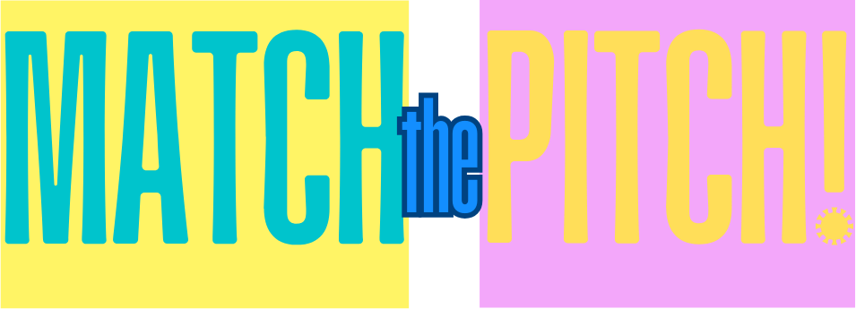
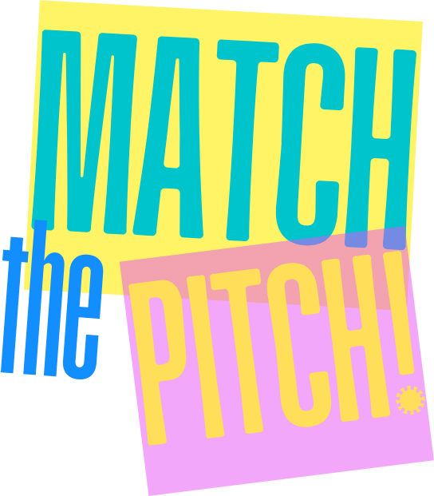

Your job is to identify the exact note being played. You will hear a single target pitch. Use the virtual piano to locate it, click the key, and press Submit Answer.
Press R to replay the target pitch, and Space / Enter to submit your guess or advance to the next note. You can adjust the octave range anytime via Game Settings.